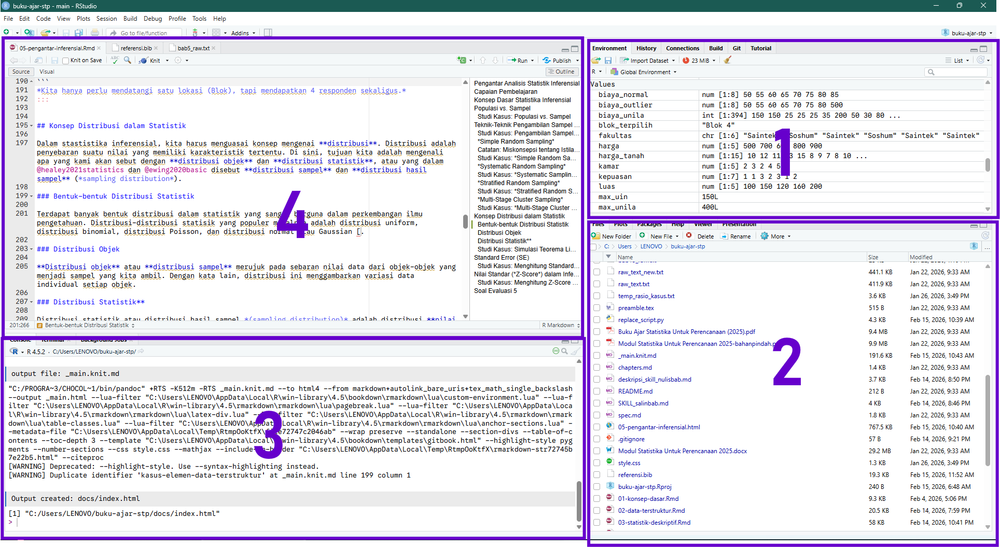
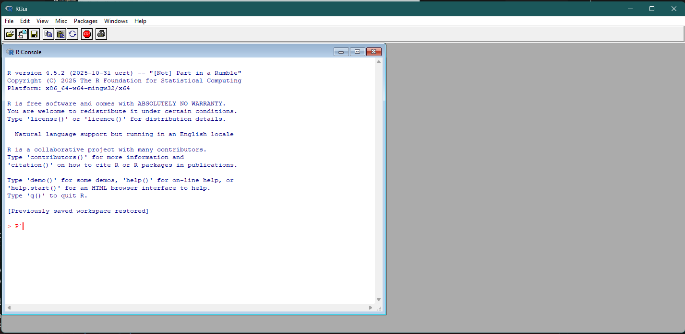

Pengenalan R dan RStudio
Selamat datang di dunia pengolahan data yang lebih canggih! Dalam praktikum ini, kalian akan berkenalan dengan teknik pengolahan dan analisis data dengan menggunakan bahasa pemrograman bernama R. R adalah bahasa pemrograman yang dibuat khusus untuk keperluan analisis statistik.
0.1 Apa itu R?
R adalah lingkungan perangkat lunak (software environment) dan bahasa pemrograman yang digunakan untuk komputasi statistik dan grafik. R dikembangkan oleh Ross Ihaka dan Robert Gentleman di Universitas Auckland, Selandia Baru, pada awal tahun 1990-an sebagai evolusi dari bahasa S yang sebelumnya dikembangkan di Bell Laboratories (Peng 2026). R bersifat open-source (berlisensi GNU GPL), yang berarti dapat digunakan secara gratis dan dikembangkan secara kolaboratif oleh komunitas global (Wikipedia contributors 2026).
Keunggulan utama R dalam konteks perencanaan dan pemerintahan meliputi:
-
Ekosistem Paket yang Luas: R memiliki puluhan ribu paket (packages) di CRAN untuk berbagai keperluan, mulai dari manipulasi data, pemodelan statistik, hingga analisis geospasial menggunakan
sfdanterra(UVA Library 2026; R Spatial 2026). -
Visualisasi Data: Dengan paket seperti
ggplot2danShiny, R memungkinkan pembuatan grafik berkualitas tinggi dan dashboard interaktif yang informatif (Posit 2026b). - Dukungan Kebijakan Berbasis Data: R mendukung implementasi kebijakan “Satu Data Indonesia” dengan kemampuan standardisasi, interoperabilitas, dan transparansi metode analisis yang dapat diaudit (ResearchGate 2026b). R memfasilitasi proses ETL (Extract-Transform-Load) otomatis untuk membersihkan data dari berbagai instansi (Romanian Statistical Review 2026).
Dalam bidang perencanaan wilayah dan kota, R digunakan untuk:
- Analisis Geospasial: Mengelola data vektor dan raster untuk pemetaan dan pemodelan lingkungan (R Spatial 2026).
-
Perencanaan Transportasi: Menggunakan paket seperti
stplanruntuk analisis jaringan, rute, dan pemodelan transportasi berkelanjutan (CRAN 2026; rOpenSci 2026). - Simulasi Kebijakan: Melakukan simulasi dampak kebijakan publik, seperti perubahan penggunaan lahan atau intervensi sosial, sebelum diterapkan secara nyata (ResearchGate 2026a).
0.2 Mengapa Menggunakan R?
R memiliki kelebihan yang signifikan dibandingkan dengan alat analisis berbasis antarmuka grafis (Graphical User Interface - GUI) seperti SPSS atau Microsoft Excel. Berikut adalah beberapa alasan utama mengapa R menjadi standar de facto dalam sains data modern:
Reproduksibilitas (Reproducibility): Berbeda dengan perangkat lunak berbasis point-and-click di mana langkah-langkah analisis seringkali sulit dilacak kembali, R bekerja berbasis skript (script-based). Setiap langkah analisis, mulai dari pembersihan data hingga pembuatan model, terekam secara eksplisit dalam kode. Hal ini memungkinkan analisis untuk diverifikasi, diaudit, dan dijalankan ulang oleh orang lain (atau diri kita sendiri di masa depan) dengan hasil yang identik, sebuah prinsip fundamental dalam penelitian ilmiah yang kredibel (Peng 2011; Gandrud 2013).
Fleksibilitas dan Kemampuan Kostumisasi: R tidak membatasi pengguna pada menu yang sudah tersedia. Sebagai bahasa pemrograman, R memungkinkan kita untuk membangun alat analisis sendiri atau memodifikasi metode yang sudah ada sesuai dengan kebutuhan spesifik penelitian, memberikan fleksibilitas yang hampir tak terbatas dibandingkan perangkat lunak tertutup (proprietary) (Wickham and Grolemund 2016).
Gratis dan Open Source: Sebagai perangkat lunak open source, R dapat digunakan sepenuhnya secara gratis. Ini menghilangkan hambatan biaya lisensi yang mahal yang sering ditemui pada perangkat lunak komersial, membuatnya sangat aksesibel bagi mahasiswa, peneliti, dan pemerintah daerah dengan anggaran terbatas.
Komunitas yang Masif: Dukungan komunitas R sangat luar biasa melalui platform seperti StackOverflow dan R-Bloggers. Jika Anda menemui masalah, kemungkinan besar orang lain sudah pernah menghadapinya dan solusinya sudah tersedia secara daring.
0.3 Apa itu RStudio?
RStudio (yang kini bertransformasi menjadi Posit) adalah Integrated Development Environment (IDE) untuk R. Diluncurkan pertama kali pada tahun 2009, RStudio menyediakan antarmuka visual yang lebih ramah pengguna dibandingkan antarmuka baris perintah (command line) asli R (Posit 2026a). Fitur-fitur seperti penyorotan sintaksis (syntax highlighting), auto-completion, dan manajemen workspace membuat pengguna baru lebih mudah mempelajari dan menggunakan R. Transformasi menjadi Posit mencerminkan komitmen terhadap ekosistem data science modern yang lebih luas, termasuk dukungan untuk Python (Irorere 2026).
Gambar 0.1 memberikan penjelasan singkat tentang tampilan jendela RStudio yang terdiri atas 4 panel.

Gambar 0.1: Bagian-bagian jendela RStudio
- Panel Environment yang menampilkan daftar data atau variabel yang telah kita impor atau buat.
- Panel Files, Plots, dan Help, tempat kita melihat daftar file yang tersedia, grafik yang dihasilkan, dan menemukan dokumen bantuan untuk berbagai bagian dari R.
- Panel Console, digunakan untuk menjalankan kode.
- Panel Script, digunakan untuk menulis kode. Di sinilah kita akan menghabiskan sebagian besar waktu kerja kita.
0.4 Instalasi R dan RStudio
Sebelum memulai praktikum, kalian perlu menginstal R dan RStudio terlebih dahulu. R harus diinstal sebelum RStudio, karena RStudio memerlukan instalasi R yang berfungsi untuk dapat berjalan.
Langkah 1: Instalasi R
- Kunjungi situs resmi CRAN di cran.r-project.org
- Pilih sistem operasi Anda (Windows/macOS/Linux)
- Untuk Windows: Klik “base” lalu unduh installer terbaru
- Untuk macOS: Pilih versi sesuai prosesor (Apple Silicon M1/M2/M3/M4/M5 atau Intel)
- Jalankan file installer dan ikuti petunjuk hingga selesai
Langkah 2: Instalasi RStudio
- Kunjungi situs resmi Posit di posit.co/downloads
- Unduh RStudio Desktop versi gratis sesuai sistem operasi Anda
- Jalankan installer dan ikuti petunjuk hingga selesai
Verifikasi: Buka RStudio setelah instalasi selesai. RStudio akan otomatis mendeteksi instalasi R yang sudah ada.
0.5 Cara Menjalankan R
0.5.1 Langsung di Console
Pertama, silakan buka program RGui. Caranya, buka Start Menu, ketikkan R x.x.x. Ganti x.x.x dengan nomor versi yang Anda unduh sebelumnya. Kemudian tekan Enter. Tampilannya adalah seperti yang terlihat pada Gambar 0.2 berikut.

Gambar 0.2: Jendela R 4.5.2
Aktivitas Mandiri: Kode R Pertama
Cobalah ketik perintah berikut di jendela yang terdapat kursor di dalamnya, lalu tekan Enter setelah mengetikkan kode berikut:
print(2 + 2)
Anda akan melihat angka 4 sebagai hasilnya.
Selamat! Anda baru saja menjalankan kode R pertama Anda.
Anda akan menyadari bahwa antarmuka RGui tidak bersahabat dengan pengguna (user friendly). Selain itu tidak ada juga alat-alat yang memudahkan kita memanajemen pekerjaan seperti menampilkan lokasi file atau script kode sumber.
Oleh karena itu, kita membutuhkan cara kedua, yakni menggunakan RStudio melalui panel Console (jendela nomor 3 pada Gambar 0.1).
Aktivitas Mandiri: Kode R pertama di RStudio
Cobalah ketik perintah berikut di Console, lalu tekan Enter:
print(2 + 2)
Anda akan melihat hasil yang sama seperti yang Anda dapat di RGui. Inilah tempat menjalankan kode R di RStudio.
Selamat! Anda baru saja menjalankan kode R pertama Anda di RStudio.
0.5.2 Menggunakan File Kode Sumber
Namun, mengetik satu per satu di Console akan melelahkan jika perintahnya banyak. Oleh karena itu, kita biasanya menulis kode dalam sebuah file source code yang berekstensi (berakhiran) .R.
0.5.2.1 Membuat File Kode Sumber R (.R)
File kode sumber R (berekstensi .R) adalah dokumen teks yang berisi rangkaian perintah R yang dapat disimpan, diedit, dan dijalankan berulang kali. Ini adalah cara profesional dalam bekerja dengan R, karena kode kita menjadi terdokumentasi, dapat direproduksi, dan mudah dibagikan.
Aktivitas Mandiri: Membuat file Kode Sumber R Pertama
- Di RStudio, pilih menu File → New File → R Script (atau tekan Ctrl + Shift + N di Windows/Linux, Cmd + Shift + N di Mac)
- Sebuah tab baru akan muncul di panel Script (jendela kiri atas)
- Ketikkan kode R berikut di dalam tab tersebut
# File kode R pertama saya
# Dibuat pada: [isi dengan tanggal hari ini]
print("Halo dunia!")
print("Hari ini saya mulai belajar R!")
# Operasi matematika sederhana
1 + 1
2 * 3- Simpan file dengan memilih File → Save (atau Ctrl + S / Cmd + S) di direktori/folder pertama muncul di jendela Anda tersebut
- Beri nama file dengan ekstensi
.R, misalnyakode_R_pertama_saya.R
0.5.2.2 Menjalankan kode dari file .R
Untuk menjalankan kode dari file .R ke Console tanpa mengetik ulang:
- Anda bisa melakukan salah satu dari sekian cara ini:
- Sorot (blok) baris-baris kode yang ingin dijalankan di panel Script. Ini akan menjalankan kode yang Anda sorot saja.
- Klik angka baris di sebelah kiri untuk memilh seluruh kode yang ada dalam satu baris.
- REKOMENDASI: menempatkan kursor pada baris yang kodenya akan dijalankan. Ini akan secara otomatis meminta R menjalankan baris kode yang dianggap satu paket.
- Tekan kombinasi tombol Ctrl + Enter (Windows/Linux) atau Cmd + Enter (Mac)
- Kode tersebut akan otomatis dikirim ke Console dan dijalankan
Aktivitas Mandiri: Menjalankan Kode R dari File Kode Sumber
- Masih dari script
kode_R_pertama_saya.Rtadi, tempatkan kursor pada baris berikut
...
print("Halo dunia!")
...- Jalankan baris tersebut dengan menekan tombol kombinasi sesuai penjelasan.
- Kemudian, tempatkan kursor pada baris berikut
...
2 * 3
...- Jalankan baris tersebut kembali.
Ini adalah cara kerja standar yang efisien dalam menggunakan R. Dengan cara ini, kita bisa:
- Menyimpan pekerjaan untuk digunakan di lain waktu
- Menjalankan ulang analisis dengan mudah
- Berbagi kode dengan rekan kerja atau asisten praktikum
- Mendokumentasikan setiap langkah analisis kita